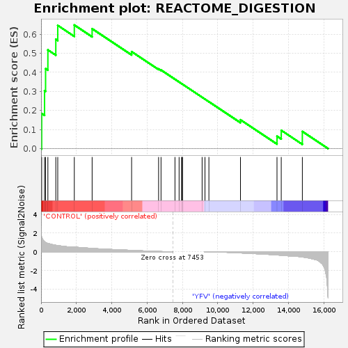
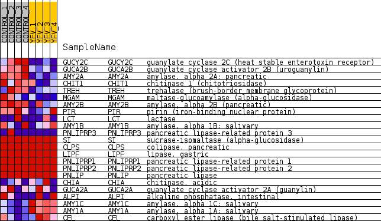
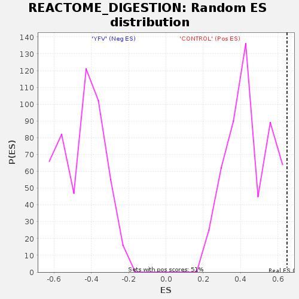

| Dataset | MATRIZ_GSE99081_collapsed_to_symbols.gsea_CLASE_99081.cls#CONTROL_versus_YFV |
| Phenotype | gsea_CLASE_99081.cls#CONTROL_versus_YFV |
| Upregulated in class | CONTROL |
| GeneSet | REACTOME_DIGESTION |
| Enrichment Score (ES) | 0.6481153 |
| Normalized Enrichment Score (NES) | 1.4601114 |
| Nominal p-value | 0.07436399 |
| FDR q-value | 0.9353066 |
| FWER p-Value | 1.0 |

| SYMBOL | TITLE | RANK IN GENE LIST | RANK METRIC SCORE | RUNNING ES | CORE ENRICHMENT | |
|---|---|---|---|---|---|---|
| 1 | GUCY2C | guanylate cyclase 2C (heat stable enterotoxin receptor) | 35 | 1.549 | 0.1841 | Yes |
| 2 | GUCA2B | guanylate cyclase activator 2B (uroguanylin) | 197 | 1.072 | 0.3031 | Yes |
| 3 | AMY2A | amylase, alpha 2A; pancreatic | 256 | 0.994 | 0.4191 | Yes |
| 4 | CHIT1 | chitinase 1 (chitotriosidase) | 386 | 0.884 | 0.5175 | Yes |
| 5 | TREH | trehalase (brush-border membrane glycoprotein) | 834 | 0.691 | 0.5731 | Yes |
| 6 | MGAM | maltase-glucoamylase (alpha-glucosidase) | 944 | 0.661 | 0.6459 | Yes |
| 7 | AMY2B | amylase, alpha 2B (pancreatic) | 1881 | 0.498 | 0.6481 | Yes |
| 8 | PIR | pirin (iron-binding nuclear protein) | 2889 | 0.354 | 0.6286 | No |
| 9 | LCT | lactase | 5123 | 0.146 | 0.5085 | No |
| 10 | AMY1B | amylase, alpha 1B; salivary | 6649 | 0.030 | 0.4180 | No |
| 11 | PNLIPRP3 | pancreatic lipase-related protein 3 | 6787 | 0.022 | 0.4121 | No |
| 12 | SI | sucrase-isomaltase (alpha-glucosidase) | 7576 | 0.000 | 0.3636 | No |
| 13 | CLPS | colipase, pancreatic | 7810 | 0.000 | 0.3492 | No |
| 14 | LIPF | lipase, gastric | 7946 | 0.000 | 0.3409 | No |
| 15 | PNLIPRP1 | pancreatic lipase-related protein 1 | 7997 | 0.000 | 0.3378 | No |
| 16 | PNLIPRP2 | pancreatic lipase-related protein 2 | 7998 | 0.000 | 0.3378 | No |
| 17 | PNLIP | pancreatic lipase | 9112 | 0.000 | 0.2691 | No |
| 18 | CHIA | chitinase, acidic | 9274 | -0.000 | 0.2592 | No |
| 19 | GUCA2A | guanylate cyclase activator 2A (guanylin) | 9496 | -0.002 | 0.2458 | No |
| 20 | ALPI | alkaline phosphatase, intestinal | 11282 | -0.128 | 0.1511 | No |
| 21 | AMY1C | amylase, alpha 1C; salivary | 13349 | -0.344 | 0.0650 | No |
| 22 | AMY1A | amylase, alpha 1A; salivary | 13589 | -0.378 | 0.0958 | No |
| 23 | CEL | carboxyl ester lipase (bile salt-stimulated lipase) | 14783 | -0.562 | 0.0898 | No |

